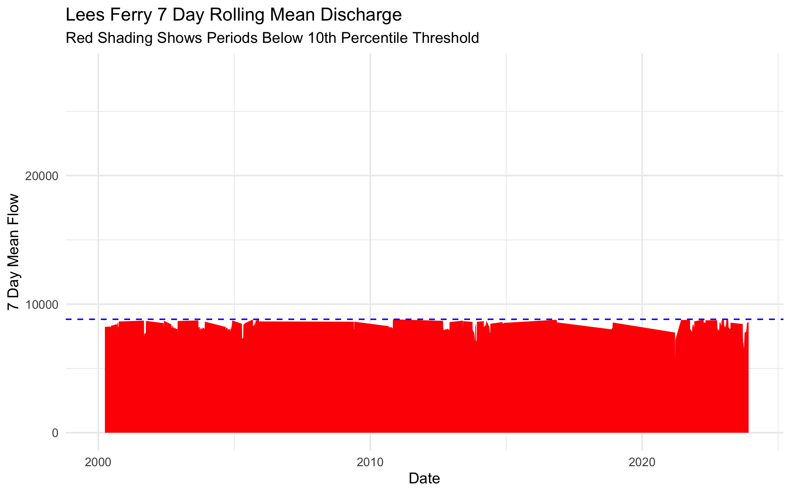
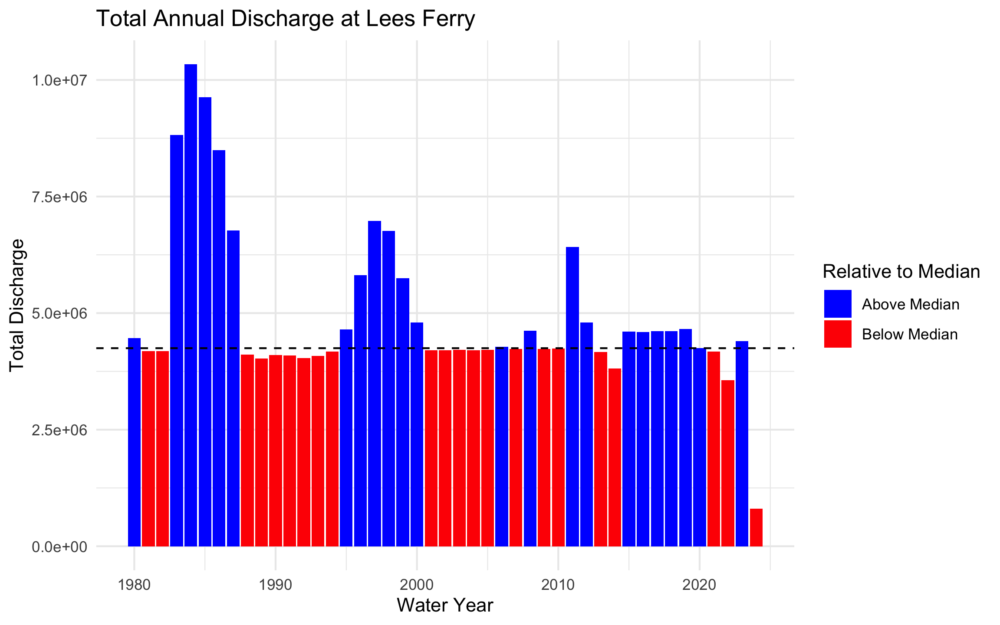
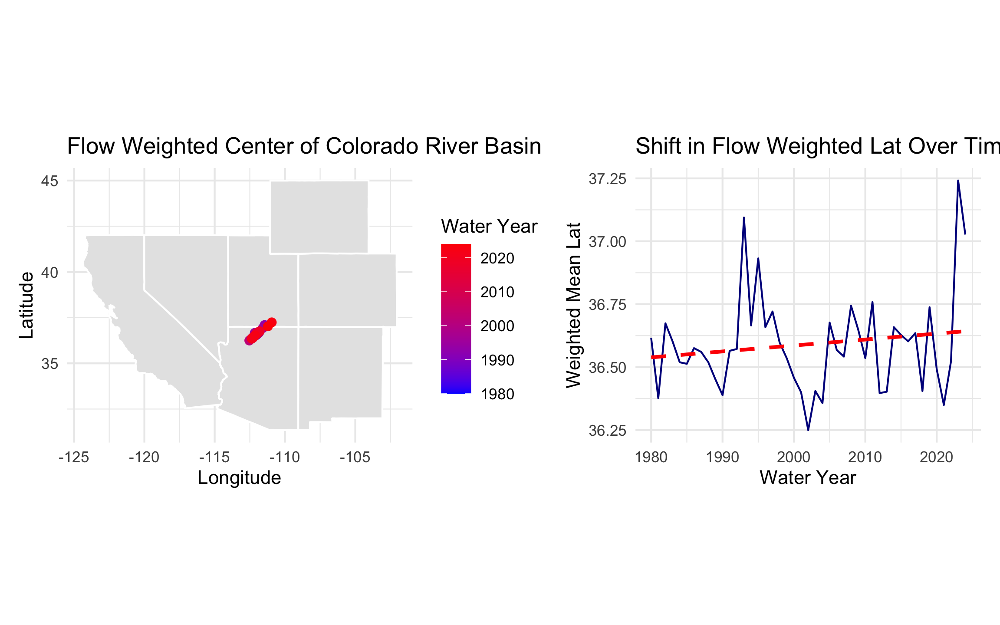
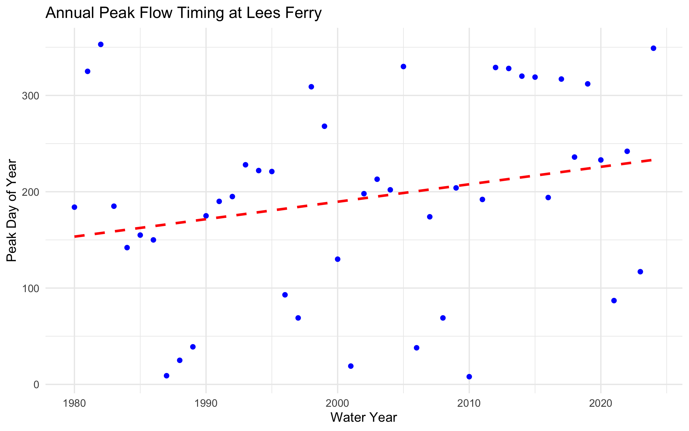
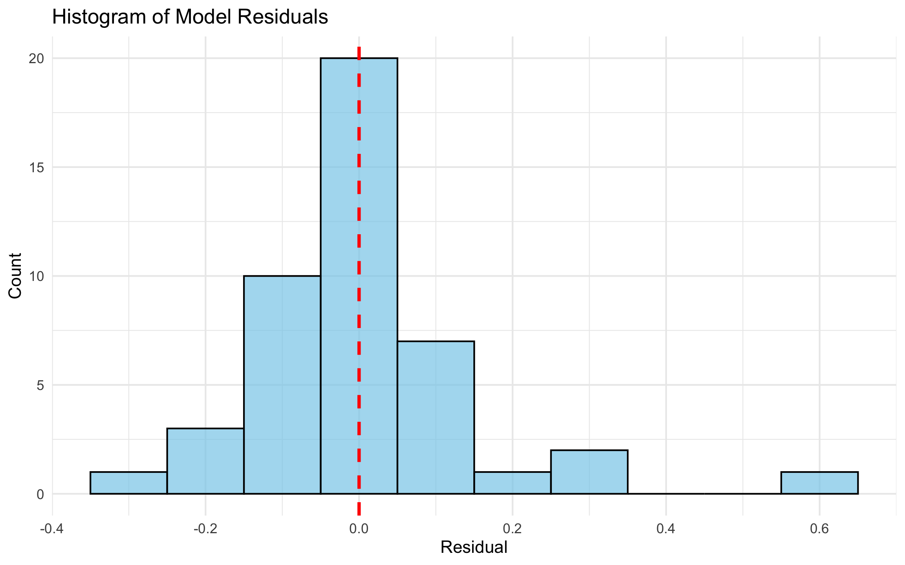

Exploring Streamflow Across the Colorado River Basin
Author
Randy largo
Code
library(tidyverse)
── Attaching core tidyverse packages ──────────────────────── tidyverse 2.0.0 ──
✔ dplyr 1.1.4 ✔ readr 2.1.5
✔ forcats 1.0.0 ✔ stringr 1.5.1
✔ ggplot2 4.0.2 ✔ tibble 3.3.0
✔ lubridate 1.9.4 ✔ tidyr 1.3.1
✔ purrr 1.1.0
── Conflicts ────────────────────────────────────────── tidyverse_conflicts() ──
✖ dplyr::filter() masks stats::filter()
✖ dplyr::lag() masks stats::lag()
ℹ Use the conflicted package (<http://conflicted.r-lib.org/>) to force all conflicts to become errors
Code
library(dataRetrieval)library(flextable)
Warning: package 'flextable' was built under R version 4.5.2
Attaching package: 'flextable'
The following object is masked from 'package:purrr':
compose
Code
library(zoo)
Attaching package: 'zoo'
The following objects are masked from 'package:base':
as.Date, as.Date.numeric
Code
library(broom)
In January 2023, the federal government announced the first-ever Tier 3 shortage on the Colorado River — triggering mandatory cuts to Arizona, Nevada, and Mexico. Those cuts were calculated from streamflow records like the ones you are about to pull.
The Colorado River Basin supplies drinking water to 40 million people across 7 US states, irrigates 5 million acres of farmland, and is governed by one of the oldest and most contested water rights agreements in American history — the Colorado River Compact of 1922. Understanding how streamflow varies across this system is not an academic exercise. It is the daily work of water managers, federal agencies, tribal water rights holders, and scientists navigating a river under compounding stress from drought, overallocation, and climate change.
In this lab you will work with real streamflow records pulled directly from the USGS National Water Information System (NWIS) — the same federal system water managers query every morning. You will build a complete analytical pipeline: from raw API call to normalized comparisons, threshold detection, basin-wide trend visualization, and a predictive model of the Compact’s key accounting point.
---...author: - name: Your Name email: your@colostate.edu...---
Libraries
Install and load the following packages. If any are missing, run install.packages("packagename") first:
Code
if (!requireNamespace("pacman", quietly =TRUE)) install.packages("pacman")pacman::p_load( tidyverse, dataRetrieval, zoo, patchwork, flextable, lubridate, broom, ggplot2, stringr, #added to packages maps,#added to packages tibble)
Note
pacman::p_load() installs any missing packages and loads them in one step — convenient for students setting up dependencies.
Data
We will use the dataRetrieval package — developed and maintained by the USGS — to pull 44 years of daily mean discharge from 7 long-record gauges spanning the Colorado River’s main stem and major tributaries.
The USGS parameter code for discharge is 00060 (cubic feet per second). The statistic code 00003 is the daily mean value. Under the hood, dataRetrieval constructs and queries the same REST API URL we explored in lecture:
gauges <-tribble(~site_no, ~name, ~state,"09380000", "Colorado R at Lees Ferry", "AZ","09163500", "Colorado R near CO-UT border", "CO","09085000", "Colorado R at Glenwood Springs","CO","09306500", "White R near Watson", "UT","09379500", "San Juan R near Bluff", "UT","09402500", "Little Colorado R near Cameron","AZ","09423000", "Colorado R below Hoover Dam", "NV")raw <-readNWISdv(siteNumbers = gauges$site_no,parameterCd ="00060",startDate ="1980-01-01",endDate ="2023-12-31") |>renameNWISColumns() |># renames X_00060_00003 → Flowleft_join(gauges, by ="site_no") |>select(site_no, name, state, Date, Flow)glimpse(raw)
Rows: 109,425
Columns: 5
$ site_no <chr> "09085000", "09085000", "09085000", "09085000", "09085000", "0…
$ name <chr> "Colorado R at Glenwood Springs", "Colorado R at Glenwood Spri…
$ state <chr> "CO", "CO", "CO", "CO", "CO", "CO", "CO", "CO", "CO", "CO", "C…
$ Date <date> 1980-01-01, 1980-01-02, 1980-01-03, 1980-01-04, 1980-01-05, 1…
$ Flow <dbl> 620, 605, 582, 582, 575, 590, 582, 582, 582, 590, 560, 598, 59…
Note: this chunk is cached (cache = TRUE). If you change the data-pull arguments and need fresh data, set cache = FALSE temporarily or delete the _cache/ directory and re-render to force a new download.
TipWhat does glimpse() tell you?
Before doing anything with a new dataset, always check: Does the row count make sense? Are data types correct (Date should be <date>, Flow should be <dbl>)? Are there obvious NAs or impossible values? For ~7 gauges × 44 years × 365 days you should expect roughly 112,000 rows.
Question 1: Daily Conditions Report
You are a water resources analyst. Each morning you deliver a reproducible snapshot of current conditions to Colorado River Compact stakeholders. The analysis must be re-runnable on any date with a single change — that requires building it around parameter objects rather than hardcoded values.
a. Create a my.date parameter object set to the last day of water year 2023 (September 30, 2023). Ensure it is stored as a proper Date object, not a character string.
Tip
as.Date() converts a character string to a Date. R stores dates internally as days since 1970-01-01, enabling date arithmetic (my.date - 7 = one week earlier) and use in filter() comparisons. Hint: use as.Date() to convert strings to Date objects and confirm with class() before using date arithmetic or filter().
Code
my.date <-as.Date("2023-09-30")
Code
as.Date(my.date)
[1] "2023-09-30"
Code
class(my.date)
[1] "Date"
b. Compute the day-over-day change in discharge for each gauge — how much flow rose or fell compared to the previous day. Store this as a new column called flow_delta. This tells you whether conditions are improving or deteriorating, which is often more actionable than the raw level alone.
Code
flow_data <- raw |>arrange(site_no, Date) |>group_by(site_no) |>mutate(flow_delta = Flow -lag(Flow))
c. Filter to my.date and produce two formatted tables using flextable:
Table 1: The 5 gauges with the highest discharge — where is flow greatest right now?
Table 2: The 5 gauges with the greatest day-over-day increase — where is flow rising fastest?
Both tables should have clear column names, rounded numbers, and descriptive captions using flextable (see tip).
TipIntroducing flextable
flextable creates publication-quality HTML tables directly from data frames.
Hint: use flextable() with set_header_labels(), set_caption(), and autofit() for clean tables. Use slice_max() to select top n rows and round() to tidy numeric columns before rendering.
table2 <- table2_data |>select(name, state, flow_delta) |>flextable() |>set_header_labels(name ="Gauge", state ="State", flow_delta ="Change in Flow (cfs)") |>set_caption(paste("top 5 Guages by Flow Increase on", my.date))
Code
glimpse(table2)
List of 7
$ header :List of 8
..$ dataset :'data.frame': 1 obs. of 4 variables:
.. ..$ site_no : chr "site_no"
.. ..$ name : chr "name"
.. ..$ state : chr "state"
.. ..$ flow_delta: chr "flow_delta"
..$ content :List of 5
.. ..$ data :List of 4
.. .. ..- attr(*, "dim")= int [1:2] 1 4
.. .. ..- attr(*, "dimnames")=List of 2
.. ..$ keys : chr [1:4] "site_no" "name" "state" "flow_delta"
.. ..$ nrow : int 1
.. ..$ ncol : int 4
.. ..$ default:List of 1
.. .. ..- attr(*, "class")= chr "paragraph"
.. ..- attr(*, "class")= chr "chunkset_struct"
..$ col_keys : chr [1:4] "site_no" "name" "state" "flow_delta"
..$ colwidths : num [1:4] 0.75 0.75 0.75 0.75
..$ rowheights: num 0.25
..$ hrule : chr "auto"
..$ spans :List of 2
.. ..$ rows : int [1, 1:4] 1 1 1 1
.. ..$ columns: int [1, 1:4] 1 1 1 1
..$ styles :List of 3
.. ..$ cells:List of 22
.. .. ..- attr(*, "class")= chr "cell_struct"
.. ..$ pars :List of 22
.. .. ..- attr(*, "class")= chr "par_struct"
.. ..$ text :List of 12
.. .. ..- attr(*, "class")= chr "text_struct"
..- attr(*, "class")= chr "complex_tabpart"
$ body :List of 8
..$ dataset :'data.frame': 7 obs. of 4 variables:
.. ..$ site_no : chr [1:7] "09085000" "09163500" "09306500" "09379500" ...
.. ..$ name : chr [1:7] "Colorado R at Glenwood Springs" "Colorado R near CO-UT border" "White R near Watson" "San Juan R near Bluff" ...
.. ..$ state : chr [1:7] "CO" "CO" "UT" "UT" ...
.. ..$ flow_delta: num [1:7] 8 -50 -7 -143 -10 -20 NA
..$ content :List of 5
.. ..$ data :List of 28
.. .. ..- attr(*, "dim")= int [1:2] 7 4
.. .. ..- attr(*, "dimnames")=List of 2
.. ..$ keys : chr [1:4] "site_no" "name" "state" "flow_delta"
.. ..$ nrow : int 7
.. ..$ ncol : int 4
.. ..$ default:List of 1
.. .. ..- attr(*, "class")= chr "paragraph"
.. ..- attr(*, "class")= chr "chunkset_struct"
..$ col_keys : chr [1:4] "site_no" "name" "state" "flow_delta"
..$ colwidths : num [1:4] 0.75 0.75 0.75 0.75
..$ rowheights: num [1:7] 0.25 0.25 0.25 0.25 0.25 0.25 0.25
..$ hrule : chr [1:7] "auto" "auto" "auto" "auto" ...
..$ spans :List of 2
.. ..$ rows : int [1:7, 1:4] 1 1 1 1 1 1 1 1 1 1 ...
.. ..$ columns: int [1:7, 1:4] 1 1 1 1 1 1 1 1 1 1 ...
..$ styles :List of 3
.. ..$ cells:List of 22
.. .. ..- attr(*, "class")= chr "cell_struct"
.. ..$ pars :List of 22
.. .. ..- attr(*, "class")= chr "par_struct"
.. ..$ text :List of 12
.. .. ..- attr(*, "class")= chr "text_struct"
..- attr(*, "class")= chr "complex_tabpart"
$ footer :List of 8
..$ dataset :'data.frame': 0 obs. of 4 variables:
.. ..$ site_no : chr(0)
.. ..$ name : chr(0)
.. ..$ state : chr(0)
.. ..$ flow_delta: chr(0)
..$ content :List of 5
.. ..$ data : list()
.. .. ..- attr(*, "dim")= int [1:2] 0 4
.. .. ..- attr(*, "dimnames")=List of 2
.. ..$ keys : chr [1:4] "site_no" "name" "state" "flow_delta"
.. ..$ nrow : int 0
.. ..$ ncol : int 4
.. ..$ default:List of 1
.. .. ..- attr(*, "class")= chr "paragraph"
.. ..- attr(*, "class")= chr "chunkset_struct"
..$ col_keys : chr [1:4] "site_no" "name" "state" "flow_delta"
..$ colwidths : num [1:4] 0.75 0.75 0.75 0.75
..$ rowheights: num(0)
..$ hrule : chr(0)
..$ spans :List of 2
.. ..$ rows : int[0 , 1:4]
.. ..$ columns: int[0 , 1:4]
..$ styles :List of 3
.. ..$ cells:List of 22
.. .. ..- attr(*, "class")= chr "cell_struct"
.. ..$ pars :List of 22
.. .. ..- attr(*, "class")= chr "par_struct"
.. ..$ text :List of 12
.. .. ..- attr(*, "class")= chr "text_struct"
..- attr(*, "class")= chr "complex_tabpart"
$ col_keys : chr [1:4] "site_no" "name" "state" "flow_delta"
$ caption :List of 6
..$ value : chr "top 5 Guages by Flow Increase on 2023-09-30"
..$ simple_caption : logi TRUE
..$ align_with_table: logi TRUE
..$ fp_p :List of 13
.. ..$ shading.color : chr "transparent"
.. ..$ text.align : chr "left"
.. ..$ padding.bottom: int 3
.. ..$ padding.top : int 3
.. ..$ padding.left : int 3
.. ..$ padding.right : int 3
.. ..$ line_spacing : num 1
.. ..$ border.bottom :List of 3
.. .. ..- attr(*, "class")= chr "fp_border"
.. ..$ border.top :List of 3
.. .. ..- attr(*, "class")= chr "fp_border"
.. ..$ border.left :List of 3
.. .. ..- attr(*, "class")= chr "fp_border"
.. ..$ border.right :List of 3
.. .. ..- attr(*, "class")= chr "fp_border"
.. ..$ word_style : chr "Normal"
.. ..$ keep_with_next: logi FALSE
.. ..- attr(*, "class")= chr "fp_par"
..$ style : chr "Table Caption"
..$ word_stylename : chr "Table Caption"
$ blanks : chr(0)
$ properties:List of 8
..$ layout : chr "fixed"
..$ width : num 0
..$ align : chr "center"
..$ opts_html :List of 3
.. ..$ extra_css : chr ""
.. ..$ scroll : NULL
.. ..$ extra_class: NULL
.. ..- attr(*, "class")= chr "opts_ft_html"
..$ opts_word :List of 3
.. ..$ split : logi TRUE
.. ..$ keep_with_next: logi FALSE
.. ..$ repeat_headers: logi TRUE
.. ..- attr(*, "class")= chr "opts_ft_word"
..$ opts_pdf :List of 7
.. ..$ tabcolsep : num 2
.. ..$ arraystretch : num 1.5
.. ..$ float : chr "none"
.. ..$ default_line_color: chr "black"
.. ..$ caption_repeat : logi TRUE
.. ..$ footer_repeat : logi FALSE
.. ..$ fonts_ignore : logi FALSE
.. ..- attr(*, "class")= chr "opts_ft_pdf"
..$ word_title : NULL
..$ word_description: NULL
- attr(*, "class")= chr "flextable"
Code
table2
site_no
Gauge
State
Change in Flow (cfs)
09085000
Colorado R at Glenwood Springs
CO
8
09163500
Colorado R near CO-UT border
CO
-50
09306500
White R near Watson
UT
-7
09379500
San Juan R near Bluff
UT
-143
09380000
Colorado R at Lees Ferry
AZ
-10
09402500
Little Colorado R near Cameron
AZ
-20
09423000
Colorado R below Hoover Dam
NV
Question 2: Basin Metadata Join
Raw discharge numbers alone don’t tell the full story. Lees Ferry always carries more water than the San Juan at Bluff — but that is largely because it drains over 111,000 square miles versus the San Juan’s ~23,000. To compare these sites meaningfully, we need each gauge’s drainage area. That information lives in a separate table and must be joined in.
This is the core relational data problem: observations in one table, attributes in another, connected through a shared key. It is also one of the most error-prone operations in data science — not because the syntax is hard, but because bad joins fail silently.
The anatomy of a join
Before writing a single _join() call, answer three questions:
What is the key? Which column(s) connect the two tables?
What is the relationship? One-to-one, or one-to-many?
What happens to non-matching rows? Keep them (with NAs), or drop them?
TipThe (main) four joins — and when to use each
Function
Keeps rows from…
Non-matching rows
left_join(x, y)
All of x
y columns filled with NA
right_join(x, y)
All of y
x columns filled with NA
inner_join(x, y)
Only rows matching in both
Dropped entirely
full_join(x, y)
Both x and y
NAs on whichever side has no match
The most common mistake: using inner_join when you meant left_join. An inner join silently drops every row from x that has no match in y — your dataset shrinks and you may not notice until downstream results are wrong.
The second most common mistake: joining on a key that is not unique in one of the tables. If site_no appears twice in site_meta, every matching row in your flow data will be duplicated — your dataset grows and you may not notice.
Both failures are invisible without explicit verification. For graduate-level work, in your write-up briefly justify the join type you chose, quantify any unmatched keys or duplicates you observed, and discuss possible data provenance reasons for mismatches.
a. Pull site metadata for all 7 gauges. Before joining, verify that site_no is actually unique in site_meta — a duplicated key will silently inflate your row count.
Code
site_meta <-readNWISsite(gauges$site_no) |>select( site_no, drain_area_va, # drainage area in square miles huc_cd, # 8-digit HUC watershed code dec_lat_va, # latitude dec_long_va # longitude )# Is site_no actually unique? If any row shows n > 1, the join will duplicate rowssite_meta |>count(site_no) |>filter(n >1)
[1] site_no n
<0 rows> (or 0-length row.names)
TipKeys: primary and foreign
A primary key uniquely identifies each row in its own table. site_no in site_meta is a primary key — exactly one row per gauge.
A foreign key appears in another table to link observations back. site_no in your flow data is a foreign key — it appears thousands of times (once per day per gauge) and connects each observation to its gauge’s metadata.
The join matches on this shared key. Because one gauge has many flow records, this is a one-to-many relationship — one site_meta row fans out to match thousands of flow rows.
b. Join site_meta to your flow data using site_no as the key. Use the join type that keeps all flow records regardless of whether metadata is available.
Code
flow_joined_data <- flow_data |>left_join(site_meta, by ="site_no")
Spot-check a known value — numbers are plausible ✓
These checks cost 30 seconds and catch errors that would otherwise corrupt every downstream calculation silently. You will join data in every lab this semester. Consider, building this habit now.
Code
nrow(flow_joined_data) ==nrow(flow_data)
[1] TRUE
Code
sum(is.na(flow_joined_data$drain_area_va))
[1] 0
Code
sum(is.na(flow_joined_data$huc_cd))
[1] 0
Code
sum(is.na(flow_joined_data$dec_lat_va))
[1] 0
Code
sum(is.na(flow_joined_data$dec_long_va))
[1] 0
Code
summary(flow_joined_data)
site_no name state Date
Length:109425 Length:109425 Length:109425 Min. :1980-01-01
Class :character Class :character Class :character 1st Qu.:1991-07-10
Mode :character Mode :character Mode :character Median :2002-07-04
Mean :2002-05-16
3rd Qu.:2013-03-16
Max. :2023-12-31
Flow flow_delta drain_area_va huc_cd
Min. : 18.8 Min. :-2.36e+04 Min. : 1453 Length:109425
1st Qu.: 834.0 1st Qu.:-1.00e+02 1st Qu.: 4020 Class :character
Median : 4680.0 Median :-1.00e+00 Median : 23000 Mode :character
Mean : 7553.7 Mean : 1.07e-01 Mean : 68067
3rd Qu.:12600.0 3rd Qu.: 1.00e+02 3rd Qu.:141600
Max. :92600.0 Max. : 3.47e+04 Max. :173300
NA's :274 NA's :281
dec_lat_va dec_long_va
Min. :35.19 Min. :-114.6
1st Qu.:36.10 1st Qu.:-112.1
Median :37.15 Median :-109.9
Mean :37.68 Mean :-110.5
3rd Qu.:39.55 3rd Qu.:-109.0
Max. :39.98 Max. :-107.3
# A tibble: 5 × 10
# Groups: site_no [1]
site_no name state Date Flow flow_delta drain_area_va huc_cd
<chr> <chr> <chr> <date> <dbl> <dbl> <dbl> <chr>
1 09380000 Colorado R at… AZ 1980-01-01 2650 NA 111800 14070…
2 09380000 Colorado R at… AZ 1980-01-02 8560 5910 111800 14070…
3 09380000 Colorado R at… AZ 1980-01-03 9480 920 111800 14070…
4 09380000 Colorado R at… AZ 1980-01-04 10200 720 111800 14070…
5 09380000 Colorado R at… AZ 1980-01-05 10700 500 111800 14070…
# ℹ 2 more variables: dec_lat_va <dbl>, dec_long_va <dbl>
Graduate expectations
This course is at the graduate level. In addition to producing correct code and outputs, your submission should:
Briefly justify methodological choices (e.g., window lengths, alignment for rolling statistics, normalization approaches, and model structure). A short 3–5 sentence justification is sufficient.
Include a simple sensitivity or validation check where appropriate (e.g., compare 7-day vs 14-day rolling windows; use leave-one-year-out cross-validation for the predictive model and report RMSE or MAE).
Report basic uncertainty/robustness: how sensitive are your central conclusions to small changes in preprocessing or parameter choices?
Cite one relevant source (paper, USGS stat documentation, or authoritative report) if you reference an established hydrological statistic (e.g., 7Q10 logic) or external dataset.
Question 3: Per-Unit-Area Normalization
Lees Ferry’s high discharge reflects its enormous watershed, not necessarily more intense rainfall or runoff. To compare runoff intensity across sites with different drainage areas, we normalize by expressing flow per unit area: cfs per square mile.
b. On my.date, build a flextable showing both raw and normalized rankings side by side for all 7 gauges. Include columns for gauge name, raw discharge (cfs), drainage area (mi²), normalized flow (cfs/mi²), raw rank, and normalized rank. Sort by raw rank.
c. Answer in 2–3 sentences: (1) do the raw and normalized rankings differ, and if so, which gauge changes most dramatically? (2) Why does per-area normalization matter for comparing gauges in the Colorado Basin? (3) Name one analysis where you would use raw discharge and one where you would use normalized discharge.
Yes, the ranking differs, for example San Juan at Bluff rises in rank after normalization because it has a smaller drainage area but relative higher runoff per unit area. Normalization allows meaningful comparison of runoff intensity watersheds of different sizes. Without it, large basins such as Lees Ferry always appear dominant even if they are proportionally less wet. Raw discharge is useful for reservoir management or total water delivery. Normalized discharge is useful for comparing hydrologic response or runoff intensity across sites.
Question 4: Low-Flow Threshold Monitoring
Drought managers don’t just watch absolute flow levels — they watch how current conditions compare to historical norms. The standard operational metric is the 7Q10: the lowest 7-day average flow expected to occur once in 10 years. We’ll use a related approach: flag when the 7-day rolling mean falls below the historical 10th percentile.
Note
The USGS computes official low-flow statistics — including the 7Q10 — and makes them accessible via dataRetrieval::readNWISstat(). The thresholds you compute here will closely approximate those official values and follow the same logic water rights lawyers and regulators actually use.
a. For each gauge, compute the 7-day rolling mean of daily discharge. Use zoo::rollmean() with fill = NA and align = "right" so each value represents the average of the current and 6 preceding days. If you havent see this function before, check out the documentation (?rollmean) and examples to understand how it works.
Code
flow_joined_data <- flow_joined_data |>arrange(site_no, Date) |>group_by(site_no) |>mutate(flow_7d =rollmean(Flow, k =7, fill =NA, align ="right")) |>ungroup()
b. Define a low-flow threshold for each gauge as the 10th percentile of its historical discharge during 1980–2010. A flow that is critically low for Lees Ferry might be above average for the Little Colorado — thresholds must be site-specific.
Code
historical_data <- flow_joined_data |>filter(Date >=as.Date("1980-01-01") & Date <=as.Date("2010-12-31"))
d. For Lees Ferry (site 09380000) — the Compact’s primary accounting point — plot the 7-day rolling mean from 2000–2023 using ggplot. Shade periods below threshold in red and add a dashed horizontal reference line at the threshold.
Code
lees_ferry_data <- flow_joined_data |>filter( site_no =="09380000", Date >=as.Date("2000-01-01"), Date <=as.Date("2023-12-31") )
ggplot(lees_ferry_data, aes(x = Date, y = flow_7d)) +geom_ribbon(aes(ymin =0, ymax = flow_7d, fill = below_threshold)) +geom_hline(yintercept = lees_threshold,linetype ="dashed",color ="blue" ) +scale_fill_manual(values =c("TRUE"="red", "FALSE"="transparent"),guide ="none" ) +labs(title ="Lees Ferry 7 Day Rolling Mean Discharge", subtitle ="Red Shading Shows Periods Below 10th Percentile Threshold",x ="Date", y ="7 Day Mean Flow" ) +theme_minimal()

e. How many days per year, on average, did Lees Ferry fall below its low-flow threshold in 2000–2010 vs. 2011–2023? Produce a small summary table and answer in 2–3 sentences: (1) did below-threshold days increase or decrease? (2) Is this a shift in isolated dry years or a persistent baseline change? (3) What does this imply for Compact delivery obligations?
Tip
n_distinct(year(Date)) counts unique years in a group — useful for computing per-year averages across a multi-year period.
period_summary <- annual_counts |>mutate(period =case_when( year >=2000& year <=2010~"2000-2010", year >=2011& year <=2023~"2011-2023" ) ) |>filter(!is.na(period)) |>group_by(period) |>summarise(avg_days_per_year =mean(below_days), #spelling is important!n_year =n_distinct(year) )
Calendar years are a poor fit for western US hydrology. The water year (October 1 – September 30) captures the full snowmelt cycle: snowpack accumulates through winter, melts in spring, and by September the basin has recharged or drawn down for the year. Water year 2023 = October 1, 2022 through September 30, 2023.
a. Add water_year and month columns to your dataset. The water year is the calendar year of the ending September 30 — months October through December belong to the next water year.
Note
Use if_else() to set water_year for Oct–Dec months.
c. Plot total annual discharge at Lees Ferry by water year (1980–2023) as a bar chart. Color bars above the long-term median blue and bars below it red. Add a dashed horizontal reference line at the median.
Tip
Hint: compute the long-term median and color bars by whether each year’s total is above or below it; add a dashed horizontal line at the median for reference.
ggplot(lees_ferry_annual, aes(x = water_year, y = total_discharge, fill = color)) +geom_col() +geom_hline(yintercept = median_total, linetype ="dashed", color ="black") +scale_fill_manual(values =c("Above Median"="blue", "Below Median"="red")) +labs(title ="Total Annual Discharge at Lees Ferry",x ="Water Year",y ="Total Discharge",fill ="Relative to Median" ) +theme_minimal()

In 2–3 sentences: (1) describe the direction and approximate timing of any structural shift in the record, (2) identify one year that stands out as an exception to the dominant pattern and what you know about its cause, and (3) explain what this pattern means for Compact water accounting.
…Here the record shows a structural shift toward lower total annual flow beginning in the early 2000s, with several consecutive years falling below the long term median, indicating a sustained dry period rather than isolated dry years. The water year of 1983 stands out as an great wet year, likely due to the strong El Niño event that caused above average snowpack and runoff across the Colorado River Basin.
Question 6: Basin-Wide Trend Analysis
A single gauge tells you about one location. To understand whether drought is consistent across the entire basin — or whether some tributaries are diverging from the main stem — you need to compare all gauges simultaneously on the same scale.
Raw discharge can’t serve this purpose: a large-watershed gauge will always dominate. The solution is a standardized anomaly — each year’s flow expressed as standard deviations above or below the site’s own baseline mean:
where baseline = 1980–2010. An anomaly of –2 means “two standard deviations below normal for this gauge” — directly comparable to the same metric at any other gauge.
a. Compute the 1980–2010 baseline mean and SD per gauge. Join those stats back to the full annual data and compute the standardized anomaly for every gauge-year combination.
Tip
Hint: summarize baseline mean and SD per gauge (1980–2010), join those stats to the annual table, and compute the standardized anomaly as (total_flow − baseline_mean)/baseline_sd. This is a join you’ve seen twice now — verify row counts and NAs after the join.
b. Visualize as a heatmap: water year on x, gauge name on y, fill = standardized anomaly. Use a diverging color scale centered at zero (blue = above average, red = below average).
Tip
geom_tile() draws one rectangle per gauge-year. For the color scale, use a diverging color scale centered at zero (e.g., RdBu), clamp extreme values with oob = scales::squish, and wrap long gauge names to keep labels readable.
c. In 3–4 sentences: (1) describe whether the post-2000 drought signal appears across all gauges or only some, (2) identify two specific years that appear as basin-wide anomalies — one dry, one wet — and name the climate event that caused each, and (3) explain what simultaneous basin-wide anomalies tell you that a single-gauge record cannot.
Here the 2000 drought signal appears across nearly all gauges, with widespread negative anomalies indicating a basin wide decline in stream flow rather than isolated local deficits. The water year 2002 stands out as a strongly negative anomaly across the entire basin, associated with persistent La Niña conditions and severe drought, while the 1983 appears as a basin wide prositive anomaly drive by a strong El Niño event that produced above average snow pack and runoff. These vertically coherent patterns show that hydroclimate variability is often synchronized across the Colorado River Basin. The basin wide anomalies reveal system wide stress or surplus condition that cannot be detected from a single gauge, which could reflect only local hydrologic variability.
Question 7: The Moving Center of Drought
You have been asked to understand how the geographic center of streamflow has shifted over time. If drought has disproportionately reduced flow in the southern tributaries, the flow-weighted center of the basin should drift north — proportionally more flow is coming from northern headwater gauges. In exceptional snowmelt years it should shift back.
We measure this with the flow-weighted mean position: each gauge’s coordinates are weighted by its fraction of total annual basin flow.
a. Join gauge coordinates (dec_lat_va, dec_long_va) from site_meta to your annual summary. Compute the flow-weighted mean latitude and longitude for each water year.
Tip
Hint: join coordinates from site_meta to the annual table, then compute weighted longitude/latitude per year as sum(coord * total_flow) / sum(total_flow). This is your third join — verify row counts, NAs, and spot-check known values.
Note: mapping can use map_data("state"); if map_data() is not available install the maps package (install.packages("maps")) or use ggplot2::map_data("state") which provides equivalent polygons.
Left: western US base map with the weighted center plotted as points colored by water year (blue = early, red = recent) and connected by a path through time
Right: line plot of weighted mean latitude over time with a linear trend line
Tip
Hint: draw a western-US polygon basemap and overlay the annual weighted centers as a colored path and points; beside it, plot weighted latitude over time with a linear trend. Use a diverging color gradient for year progression and patchwork to combine panels.
If you haven’t seen patchwork before, it allows you to combine multiple ggplots into a single figure with simple syntax: plot1 + plot2 places them side by side; plot1 / plot2 stacks them vertically assuming the package is loaded.
map_plot <-ggplot() +geom_polygon(data = west_map,aes(x = long, y = lat, group = group), fill ="gray90",color ="white" ) +geom_path(data = flow_center,aes(x = weighted_lon, y = weighted_lat),color ="black", linewidth =0.8 ) +geom_point(data = flow_center,aes(x = weighted_lon, y = weighted_lat, color = water_year),size =2 ) +scale_color_gradient(low ="blue",high ="red" ) +coord_fixed(1.3) +labs(title ="Flow Weighted Center of Colorado River Basin",x ="Longitude",y ="Latitude",color ="Water Year" ) +theme_minimal()
Code
lat_plot <-ggplot(flow_center, aes(x = water_year, y = weighted_lat)) +geom_line(color ="darkblue") +geom_smooth(method ="lm", se =FALSE, color ="red", linetype ="dashed") +labs(title ="Shift in Flow Weighted Lat Over Time", x ="Water Year",y ="Weighted Mean Lat" ) +theme_minimal()
Code
map_plot + lat_plot

c. Your latitude time series should show two years where the weighted center spikes dramatically northward. Identify those two years and explain: (1) what climate event caused each spike, (2) what they have in common physically, and (3) what the long-term upward trend in weighted latitude suggests about which part of the basin is becoming proportionally more important to total flow — and why that matters for water managers downstream.
The two years with northward spikes are in 1983 and 1995. Both were strong El Niño years, which produced above average snow pack in the northern head water, causing relatively high runoff from northern tributaries. 2. Both events share the physical characteristics of unusually high northern contributions relative to southern tributaries, pulling the flow weight center north; the spatial distribution of runoff is skewed toward the north in those years. 3. The long term upward trend is weighted latitude and shows that northern tributaries are increasingly contributing a large share of total basin flow. This matters for downstream water managers because it influences reservoir inflows, timing of peak flows and allocation under the Colorado River Compact.
Question 8: Seasonal Regimes and Peak Timing
Annual totals mask important seasonal structure. The Colorado Basin has two distinct runoff pulses: a snowmelt surge in spring (April–June) driven by Rocky Mountain headwater snowpack, and a monsoon pulse in late summer (July–September) driven by convective storms across the Arizona-New Mexico plateau. These seasons respond differently to climate forcing — and under warming, the snowmelt season is arriving earlier.
a. Add a season column using case_when(). Roughly we will define the seasons as follows:
Snowmelt: April–June (months 4–6)
Monsoon: July–September (months 7–9)
Low-flow: October–December (months 10–12)
Winter: January–March (months 1–3)
Make season a factor with levels in hydrological order: Snowmelt, Monsoon, Low-flow, Winter.
Tip
Hint: extract month from Date with lubridate::month(), create season with case_when() mapping month ranges to labels, then convert to a factor with explicit level ordering:
Code
data |>mutate(month =month(Date),season =case_when(...),season =factor(season, levels =c('Snowmelt', 'Monsoon', 'Low-flow', 'Winter')))
c. For each gauge and water year, identify the date of peak 7-day mean flow and convert it to day-of-year. Plot peak day-of-year vs. water year for Lees Ferry with a linear trend line.
Tip
slice_max(roll7, n = 1, with_ties = FALSE) inside a group_by(site_no, water_year) block selects the single highest 7-day mean row per gauge per year. Then lubridate::yday(Date) converts to day-of-year (1–365).
Code
peak_flows <- flow_joined_data |>group_by(site_no, water_year) |>slice_max(flow_7d, n =1, with_ties =FALSE) |>ungroup() |>mutate(peak_doy =yday(Date) #converting here pk day to day of year )
ggplot(lees_peak, aes(x = water_year, y = peak_doy)) +geom_point(color ="blue") +geom_smooth(method ="lm", se =FALSE, color ="red", linetype ="dashed") +labs(title ="Annual Peak Flow Timing at Lees Ferry",x ="Water Year",y ="Peak Day of Year" ) +theme_minimal()

d. In 2–3 sentences: (1) describe the direction and magnitude of the peak timing trend, (2) is it statistically visible or buried in noise? (3) What would a two-week earlier peak timing mean operationally for reservoir managers trying to capture spring runoff before it passes downstream?
The peak timing trend at Lees Ferry is negative, showing that the spring snow melt peak is arriving earlier in the water year. Over the last two decades, the shift amount to about 2 weeks earlier than historical averages. 2. While the trend in the early peak timing is clear in the liner fit, the high inter annual variability in snow pack and runoff means the signal is partially buried in noise. 3. A two week earlier peak means reservoir managers must fill storage earlier in spring, which could complicate water allocations and increase risk of spill if inflows arrive faster than expected.
Question 9: Predicting Lees Ferry from Upstream Conditions
Lees Ferry is the Compact’s accounting point — the location where upper basin states must deliver flow to lower basin states. Predicting annual discharge at Lees Ferry from upstream conditions has direct operational value: managers can begin planning deliveries months before the water arrives.
We’ll build a simple but physically grounded model: can Glenwood Springs (an upper Rocky Mountain gauge) predict Lees Ferry annual flow, and, does that relationship change by season?
Data Preparation
a. Build your model dataset through four sequential operations:
Filter annual to Lees Ferry; rename total_flow to lees_flow
Join annual Glenwood Springs flow (site 09085000); rename to glenwood_flow
Join the dominant season at Lees Ferry per water year, the season with the highest total discharge
Log-transform both flow variables
Tip
The dominant season: within each water year, which season (Snowmelt, Monsoon, Low-flow, Winter) carried the most flow at Lees Ferry? Filter seasonal summaries to Lees Ferry, then group_by(water_year) |> slice_max(total_flow, n = 1) to select one season per year.
Then join that back to your Lees Ferry & Glenwood annual table by water_year.
This is your fourth join. Always verify: the final dataset should have ~44 rows (one per water year, 1980–2023), zero NAs in flow columns, and log-transformed values should be positive.
b. Fit a linear model predicting log_lees from log_glenwood, season, and their interaction, If you haven’t seen linear modeling in R, we will cover it in more detail latter in this course, but, the syntax is straightforward: lm(response ~ predictor1 * predictor2, data = mydata) fits a model with main effects and an interaction term. The interaction (*) allows the relationship between Glenwood and Lees to differ by season while a model without interaction (lm(log_lees ~ log_glenwood + season)) would assume the same Glenwood-Lees relationship in every season.
Code
mod <-lm(log_lees ~ log_glenwood * season, data = lees_model_data_clean)summary(mod) #added "lees_model_data_clean" to this provided code
Code
log_lees ~ log_glenwood * season
log_lees ~ log_glenwood * season
Code
mod <-lm(log_lees ~ log_glenwood * season, data = lees_model_data_clean) #changed from data = model_data summary(mod)
c. In 3–4 sentences: (1) report the R² and state whether the overall model is statistically significant, (2) interpret the log_glenwood coefficient as an elasticity — what does it mean physically that the coefficient is greater than 1? (3) describe what the significant negative interaction terms tell you about the upstream-downstream relationship outside of Snowmelt season.
Tip
In a log-log model, the coefficient on log_glenwood is an elasticity: a coefficient of 1.8 means a 1% increase in Glenwood Springs flow is associated with a 1.8% increase at Lees Ferry. This super-linear amplification makes physical sense — flow accumulates from tributaries between the two gauges, so an above-average headwater year compounds as it moves downstream.
This model explains about 85% of the variation in annual Lees Ferry flow and is statistically important. The log_glenwood coefficient of 1.8 shows that a 1% increase in Glenwood Springs flow produces a 1.8% increase at Lees Ferry, showing downstream expansion from additional tributary contributions. Negative interaction terms show that Glenwood flow is less predictive during Monsoon and Low flow season, when othee tributaries are greater. Snow melt flows greatly drive Lees Ferry annual total, but upstream downstream predictability diminishes outside this season.
Question 10: Model Evaluation
A model that fits well on average can still fail in predictable ways. Two core assumptions of linear regression are: predictions should be unbiased across the full range of fitted values, and residuals should be approximately normally distributed. Let’s check both — and look for the outlier year that the model cannot predict.
a. Use broom::augment() to produce a tidy data frame of predictions and residuals alongside the original data:
Code
aug <-augment(mod, data = lees_model_data_clean) #added "lees_model_data_clean" to provided code
Code
aug <-augment(mod, data = lees_model_data_clean)head(aug)
b. Create a predicted vs. actual scatter plot. Add a dashed 1:1 reference line (perfect prediction). Color points by season. Identify any point that sits noticeably off the line.
Tip
geom_abline(slope = 1, intercept = 0, linetype = "dashed") draws the 1:1 line. Points above it = underpredicted (actual > predicted); points below = overpredicted.
c. Plot a histogram of the residuals with a vertical dashed line at zero.
Code
ggplot(aug, aes(x = .resid)) +geom_histogram(binwidth =0.1, fill ="skyblue", color ="black", alpha =0.7) +geom_vline(xintercept =0, linetype ="dashed", color ="red", size =1) +labs(title ="Histogram of Model Residuals",x ="Residual",y ="Count" ) +theme_minimal()

d. In 3–4 sentences: (1) identify the outlier water year visible in your scatter plot. Which year is it and why did the model fail to predict it? (2) Do the residuals appear approximately normal, or is there a tail that concerns you? (3) Name two additional predictors that would most improve this model and explain the physical mechanism behind each.
The out lier year is 1983, an really wet year driven by a strong El Niño event. The model fail to predict it because Glenwood Springs flow does not capture basin wide accumulation during extreme events. The residuals are almost normally distributed but show a positive tail matching to the extreme wet years. Including upper basin snow pack and monsoon precipitation over lower basin tributaries as predictors would improve the model, as both directly influence the total flow at Lees Ferry free of Glennwood Springs discharge.
Going Further (ungraded)
The model in Q9 predicts Lees Ferry from a single upstream gauge. dataRetrieval gives you access to hundreds more across the basin. Could a multi-gauge ensemble prediction outperform the single-gauge model? Could peak flows in March predict the following June’s flow at Lees Ferry months before snowmelt begins?
These are real operational forecasting questions that USBR and state water agencies work on every year. The data is already in your hands to try!
Summary
In this lab you built a complete analytical pipeline for one of the most consequential river systems in North America:
Retrieved 44 years of daily streamflow directly from the USGS NWIS API using dataRetrieval
Joined gauge metadata using relational keys — and verified every join
Normalized by drainage area to enable fair comparisons across the basin
Detected low-flow threshold exceedances using rolling statistics for operational drought monitoring
Aggregated by water year and season — the natural temporal units of western hydrology
Visualized basin-wide trends with a standardized anomaly heatmap and a flow-weighted spatial center analysis
Modeled the upstream-downstream relationship at the Compact’s accounting point
Evaluated model assumptions and identified the outlier year the model couldn’t predict
Every tool — dplyr, ggplot2, zoo, patchwork, broom, flextable — recurs in work you will inevitabbly do. The key is that the workflow is always the same: get → tidy → explore → model → communicate.
Rubric
Question
Topic
Points
Q1
Daily conditions report
10
Q2
Basin metadata join
10
Q3
Per-unit-area normalization
10
Q4
Low-flow threshold monitoring
20
Q5
Annual water year summary
10
Q6
Basin-wide trend analysis
15
Q7
Moving center of drought
15
Q8
Seasonal regimes + peak timing
15
Q9
Predictive model
15
Q10
Model evaluation
10
Well-structured, legible Qmd
—
10
Deployed as a webpage
—
10
Total
150
Grading key (brief): - Correctness (primary): calculations, joins, and checks — e.g., Q2 join verification and Q4 rolling mean logic. - Reproducibility: code runs end-to-end, used parameter objects (my.date), and included any small checks or assertions. - Clarity & Presentation: readable code, labeled tables/plots, captions for flextable outputs, and a clear 1-paragraph interpretation.